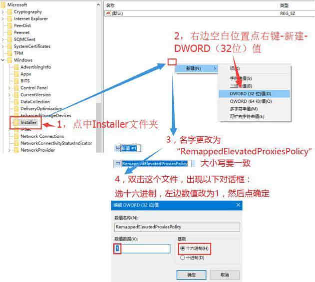

SOLIDWORKS安装向导
包括 SOLIDWORKS 本体单机版，网络版，插件类的安装向导
配置要求：
注意：安装前，需检查当前电脑配置是否支持SW的安装环境（详细见下方配置要求参考）。
SOLIDWORKS官网系统要求
SOLIDWORKS官网硬件认证
普吉网站的选配参考
硬件组成：
处理器 CPU：
负责处理 SOLIDWORKS 程序操作过程的计算。对于零部件设计模块，其所占用的是 CPU 的单核心的计算能力，单核主频越高越好。对于模拟和渲染计算，更多核心的 cpu 有利于提高计算速度。
内存 RAM：
当一个文档在 SOLIDWORKS 中打开时，它将会被加载到 RAM 内存上。因此，您需要足够的内存来运存 SOLIDWORKS 文件，我们发现在普遍在 16GB 是可以满足正常设计需求。当你需要处理大型装配体时，建议按需升级内存配置（见下表）
显卡 GPU:
显卡对你的工作效率至关重要。它帮助处理器加速操作，如缩放和旋转。英特尔 HD 显卡，以及 GeForce 和 Radeon(非 Pro)等卡是不支持的消费级卡。通常性能和稳定性都很差。
NVIDIA 也是 SOLIDWORKS 可视化渲染中唯一支持 NVIDIA iRay 的显卡。图形和那些拥有 4GB 或更多内存的支持新的 AI 去噪(推荐 6GB+)意味着你可以更快地返回结果。最新的 Quadro RTX 显卡甚至有专门的光线追踪核心来进一步加速渲染
硬盘 ROM：
固态硬盘(SSD)相对机械硬盘（HDD）提供了显著的读写性能的提升，我们建议是将操作系统，软件，操作文件放置在固态硬盘操作，至少将操作系统和程序放置在固态硬盘。对于硬盘容量尽量空余 1/4 以上的空间，而不是占满整个硬盘，以获得最佳性能。
设计配置参考：
如果您需要平时设计建模的流畅和响应性能，选择高频 CPU 和 16GB 以上内存是绝大多数 CAD 的理想选择。对于除了最大和最复杂的组件装配体或零部件，则按需升级硬件配置，详见下表：

仿真配置参考：
一般图形渲染和仿真模拟可以从更高的内核数中受益。一般会建议使用英特尔至强（Xeon）W 处理器，其在 Flow 和 FEA 模拟中表现非常出色。
更高的核心也有助于基于 CPU 的渲染，就像 PhotoView 360 ，Visualize 等，如果您是主要关注图形渲染方面，那么像 AMD 的 Threadripper 这样的更高核心数的平台将会更快。

单机版安装
找到安装程序，建议使用“管理员身份启动”安装程序
..\SOLIDWORKS 20xx SP05 安装包\setup.exe
步骤：
1、安装类型：单击安装
2、序列号：填写序列号（或临时序列号，后面再激活）
3、选择安装产品、位置、Toolbox位置
4、开始安装。
网络版版安装
注意：安装前，需检查当前许可服务器配置是否支持安装环境（详细见#配置要求）。
1、安装SNL许可服务器：
..\SOLIDWORKS 20xx SP05 安装包\swlicmgr\setup.exe
2、安装客户端：参考上面的#单机版安装。
插件安装
插件是基于SW程序本体的拓展功能，使用需要先安装SW软件才能使用。
与单机版安装区别是在【序列号】填入所需插件的序列号，在下一步的产品选择中勾选所需的插件即可安装。
修复安装
修复安装异常时，可以尝试如下设置：
1.打开注册表编辑器找到如下位置（如果没有就新建）；
1 | HKEY_LOCAL_MACHINE\SOFTWARE\Policies\Microsoft\Windows\Installer |
新建一个 Dword 值，名字为“RemappedElevatedProxiesPolicy”，值为 1；
打开 solidworks 安装程序，选修复安装；
安装完后打开 Solidworks 确认问题解决后，将“RemappedElevatedProxiesPolicy” 的值改为 0。
常见问题 Q&A：
问：拥有更多 CPU 内核是否会提高 SOLIDWORKS 性能？
答：在 SOLIDWORKS 中建模和处理装配体只能使用少量核心。具有单核心高频率的处理器将体现一般建模时的最佳性能。然而，模拟和渲染可以通过更高的核心数看到中等到较大的性能提升。这就是需要区别工作站电脑是用于主设计还是主仿真。
问：我需要使用 Quadro 卡还是 GeForce ？
答：一般建议 Quadro 卡。我们发现在“带边缘阴影”模式下，即使是低端 Quadro 也将胜过最快的 GeForce 显卡。此外，使用工作站卡是获得对 Realview（俗称“小金球”）等功能的官方支持的唯一方法。详细可见：SOLIDWORKS 硬件认证。
问：我需要多少系统 RAM？
答：您需要的 RAM 数量将取决于装配中零件的数量和复杂性。一般的经验法则是 SOLIDWORKS 本身需要大约 5GB 的 RAM，然后至少是您使用的最大装配体文件大小的 20 倍。大多数用户需要大约 32GB 的 RAM，以便为 SOLIDWORKS 和他们可能想要运行的其他各种应用程序提供足够的内存，但具有极其复杂的装配体或模拟的用户会想要更高。
问：SSD 能否帮助我更快地打开和保存装配体？
答：是的！SSD 比传统硬盘驱动器快得多，并且在许多情况下可以显着减少打开和保存装配体所需的时间。请注意，较小的装配体往往不受 I/O 限制，这意味着与更快的存储驱动器可能没有太大差异，但通常，打开装配体所需的时间越长，SSD 就越有用。
问：我需要 Xeon CPU 吗？
答：一些英特尔至强处理器提供的核心数量比主流酷睿型号高得多，内存容量也更高，有时还支持额外的指令集。这些功能一起可以提高渲染和某些类型模拟的性能。但是，至强 CPU 的时钟频率几乎总是低于酷睿 i7 和 i9 CPU - 这意味着您将放弃少量性能来执行一般建模任务。我们提供基于这两个平台的系统，具体取决于 SOLIDWORKS 的哪些方面对您最重要 - 哪些方面更符合您的预算。
问：我应该买一个超频的系统吗？
答：一般来说，我们不建议对任何专业工作站进行超频。通常，适度的性能提升不值得与超频相关的缺点，包括不稳定、更短的硬件寿命和潜在的数据不准确。
问：这些系统是否适用于 CATIA 或其他 CAD 软件？
答：是的！SOLIDWORKS 和 CATIA 具有非常相似的系统要求，因此这些工作站也应该非常适合几乎任何 CAD/CAM/CAE 软件，包括 CATIA、Solid Edge、Creo 等。